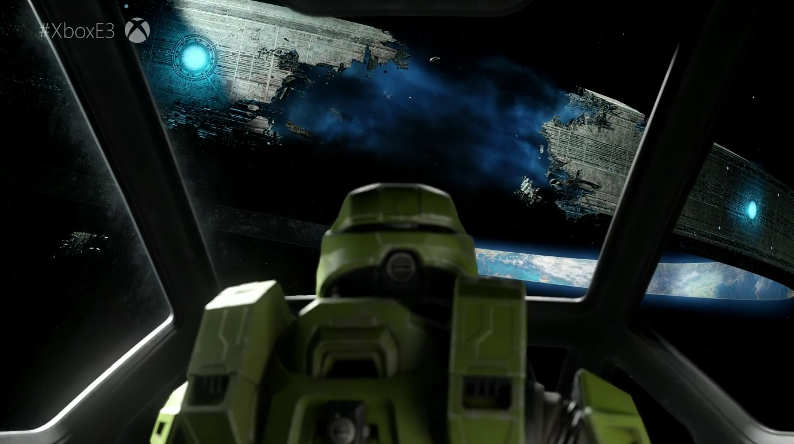

Chapter 4
After having played up to this point and again, observing a bit of the ship, I knew I wanted to experience Halo. I wanted to and get an Xbox One S. So I did. I got found a used Xbox One S, that was in near perfect condition in the fall of 2018. I named the Xbox One S, Kate.
Few months later—lo and behold—Halo: The Master Chief Collection was made available to Microsoft’s Xbox Game Pass subscription. I could essentially experience all of the mainline Halo titles, including the Halo Combat Evolved Anniversary and Halo 2 Anniversary, and play all of the Halo titles up to Halo 4, with all-around updated visuals 1080p, 60 frames per second just for one dollar (a promotional deal for, an otherwise $10 a month) with Xbox Game Pass. And that’s where my journey in the world of Halo would continue starting January 2019 through the end of the year. I would slowly play through the campaigns, completing Halo 4 by late summer of 2019. I then even downloaded and completed the Halo 5 campaign, despite it being one of the weakest campaigns of the series. Why? Because I was so hyped for Halo Infinite. Infinite was the first game since the reveal of Portal 2 that I was actually hyped for, can you believe it. In fact, that’s a topic for a whole other video. If you are interested about hearing the story of how I felt about infinite at its reveal in 2018 and how my feelings and excitement towards that game changed as I slowly played though the other halo campaigns, let me know down in the comments.
It had been hours, and I was still on mission 2. I was going slow admiring the map and I kept dying and had to take cover a lot because I was so bad at aiming and hitting the enemies. So I decided to save and quite for the night. But surprisingly, or not so surprisingly, I started the game back up the next day and continued on with mission 2.
Anyway, during this time, I was slowly getting better at aiming at the alien people and dodging their bullets. To my own surprise, I would replay replay a previous campaign missions from Halo Combat Evolved when I needed to wind down. I was actually going back and playing a first-person shooter level for the gameplay. I was enjoying the gameplay of Halo. I didn’t need the story or mystery of the environment to enjoy the game anymore.
Even more surprisingly, before I even finished Halo 4, I went back and played Halo 2 on the PC. Went nearly the halfway till the game glitched out, resetting my progress. I was replaying a first-person shooter campaign this was something I never thought I’d do. Personally, I didn’t enjoy the gameplay of Halo 4. Fighting the covenant was fine on that game, but something just wasn’t right when it came to fighting the new enemies called “promethiens”. Interestingly enough, though, I actually did enjoy the gameplay of Halo 5’s campaign. Let me know if you want my thoughts on what I think of Halo 4 and 5 as compared to the trilogy.
Oh, and did that thing startle me or what? Initially assuming it part of the black sky, I was taken aback after suddenly noticing what appeared like a giant, hovering, black blob covering the moon light. Yes, I had either missed or forgotten the opening line of this level, where Cortana mentions the Covenant cruiser, Truth and Reconciliation. So seeing this large spaceship was something I wasn’t expecting at all.
So I kept looking, observing its various details. I could see little yellow dots, almost looking like starlight. Those must be windows, I thought, like how windows of city buildings from afar like little tiny dots. Then I began to, once again, began to let my thoughts wonder. What was it like, to live on a high tech space ship of the future? Man, those aliens must be lucky to be able to ride that thing! I imagined what might have been on the other side of one of those lit windows. Was there a cabin, a futuristic cabin, where an alien was sleeping on their futuristic bed? Was it a dining hall, where alien people were discussing whatever alien people discuss? And speaking of dining hall, what was their food like? How did they live their daily lives? Were the alien people on that spaceship missing their loved ones back in their home planet?
And before you know it, I went back and loaded up my copy of Halo 3 for the Xbox 360 that I got for free as part of Xbox Games with Gold, and experienced the game that way, as it was in 2007 in the original hardware, finishing the campaign in a couple of days without much issues at normal difficulty, which was new for someone like me who almost always played on easy and still died over a hundred times in one level!
So, this is my story of being a player who hated the FPS game mechanic, trying Halo, and being immersed into the mysterious environment, and finding myself to enjoy the FPS mechanic, at least of Halo. I did try and play other FPS games like Battlefield and Black Mesa. But I was not enjoying them and wanted to quit after 30 minutes. Something about the combat mechanics of Halo seems to click with my rhythm. Minus the Prometheans from Halo 4 and 5. I wasn’t a fan of the flood either, but—oh—they still weren't as annoying to fight as the Prometheans. But I'm just nit-picking now.
So, there I was, playing through and replaying the campaigns of the First Person Shooter Halo titles, after having gone over 20 years of gaming without liking or playing a single first person shooter. Halo grabbed my attention and changed it all, right from its menu screen, before I had even booted up the first level.
It’s safe to say that 2019 was a year of many big challenges. And when I look back, experiencing Halo was one of the things that helped me cope through the tough time. It wasn’t the only thing, but it certainly played a big part.
So, yes, I like shooters, at least when it comes to fighting the alien people…I mean the covenant. I loved playing all of the campaigns minus Halo 4’s. I even enjoyed Halo: Reach, which I completed in January 2020 once it launched as part of MCC on PC. I have great memories of these campaigns, especially Halo 2 anniversary, from its breathtaking cutscenes to playing as the arbitor…and well just everything about it. But despite all this, there will always be a special place in my heart for Halo: Combat Evolved’s sense of mystery, awe, wonder, exploration. The developers of Halo: CE had made something special besides a great and innovative first person shooter for the console. Whether they know it or not, they made a game that was able to tell me, the player, a rich story full of mystery and wonder, from having me just standing looking around in a small portion of a map in one game level. And, that, will always be the thing that makes Halo: Combat Evolved most gamechanging experience in two and a half decades of gaming. And to date, no other Halo titles, as awesome as they are, have been able to replicate this experience of mystery and wonder. But if there is a Halo title that potentially could replicate it, it’d be Halo Infinite. But that’s a topic for another day!
Thanks for taking the time to read my rambling thoughts on this game called Halo. Click here to return to Project 1 Home.
External Links
Thanks for visiting!